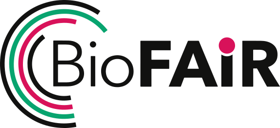

BIOFAIR PATHFINDER · 2026–27
Same brilliant resources, two endings. On their own they may stall at the gap; the bridge we're building carries them across so researchers reach FAIR.
POWER-UPS · a highlight of the community resources we're considering & credit
Just a highlight – there's much more brilliant guidance from the wider FAIR community. But guidance alone doesn't reach the bench. The bridge puts it in researchers' hands.
GOT A RESOURCE FOR THE PLAYBOOKS?
If it helps researchers reach the FAIR goal, it belongs on the bridge. Tell us what to include → rdm-coordination@elixiruknode.org
